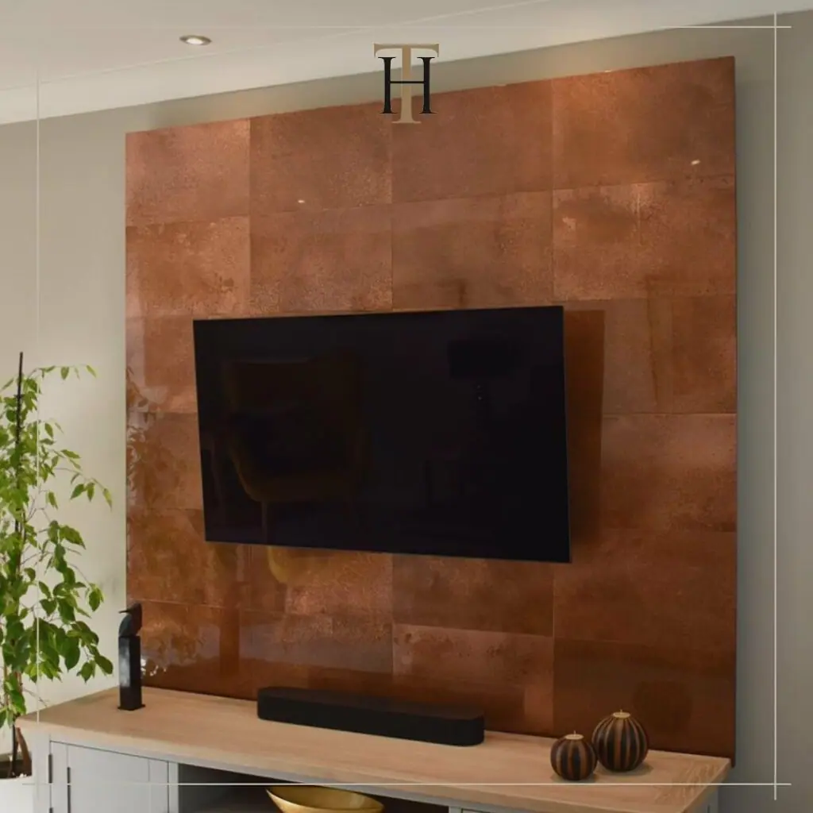

Few materials can equal the depth and appeal of copper and copper tiles bring all that in a very flexible decorative material.
You can see aged or natural copper tiles on the walls of offices, barber shops, bars, restaurants and commercial spaces. Anywhere you want to make a statement while offering practicality and ease of use.
All copper tiles from Halman Thompson are designed and created by hand, to order. We can provide any shape, any size and a variety of finishes. Simply tell us what you’re planning and we’ll take care of the rest!
Contact our team for a free, bespoke copper tile quotation!

Cut to size
Each of our bespoke finishes can be purchased in sheets cut to your size, perfect for your project.
- Pricing includes delivery and turnaround time is just 5-8 weeks
- Each piece is coated in a gloss finish lacquer that prevents the sheet from further aging

Ready to go
We can provide bespoke cut metal with each of our finishes being wrapped around wood and lacquer finished. Please get in touch for a bespoke quote .
Copper tile finishes
Copper tiles are available in five sumptuous finishes:
- Ayrshire finish – Speckled effect copper patina with verdigris throughout to deliver a tile that will always reveal something new
- Cheshire finish – Textured copper finish with lighter and darker tones throughout that provide a different finish in different light
- Hertfordshire finish – Making a statement with larger verdigris elements through to provide a multihued finish
- Northumberland finish – An engaging swirl effect with aged copper and verdigris to provide almost an oceanic patina
- Natural copper finish – The warm welcome that only natural copper can provide along with a lustrous finish
BESPOKE COPPER TILES
All copper tiles from Halman Thompson are made by hand to order. Each can be artificially aged to the desired look and laser cut to size.
Copper tiles are available in a variety of shapes and sizes including square, rectangle, triangle, hexagon, diamond and fish scale. Whatever your design requires, we can cut to size!
Copper tiles are also aged to order , allowing you to create a unique look that fits seamlessly within a design.
Our artisans artificially age the metal using a specialist process and halt ageing once the copper reaches the desired tone. We then seal the tile in a tough clear lacquer to maintain that look and protect the tile.
Natural copper tiles are available with or without lacquer.
PRACTICAL COPPER TILES
Copper not only looks amazing but is easy to install and look after too.
Installation is easy, prepare the surface and use epoxy or adhesive to hold in place.
Maintenance is minimal, requiring just warm soapy water and a soft cloth. Each tile comes with full care instructions so you’ll know exactly what to do.
Contact Halman Thompson for a free, no-obligation copper tiles quotation !


If you can dream it, we’ll make it.
Bars, balustrades, staircases, worktops, cladding and pieces that don’t have a name yet. Our designers and craftspeople work in brass, copper, zinc and steel, and alongside wood.